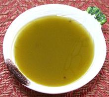

 |
Vinaigrette ProvençaleFrance, Provence - Vinaigrette Provençale | ||||
| Makes: Effort: Sched: DoAhead: |
3/4 cup * 10 min Yes |
This is a standard salad dressing (also used on chicken, etc.) in southern France. See Oil / Vinegar for comments on the ratio. | |||
|
1/2 1/4 3 3 3 2/3 1/3 |
c c cl t t |
Olive Oil, ExtV (1) Wine Vinegar, red (1) Garlic Summer Savory Sprig (2) Basil Leaf Salt Pepper |
Make: - (10 min)
|